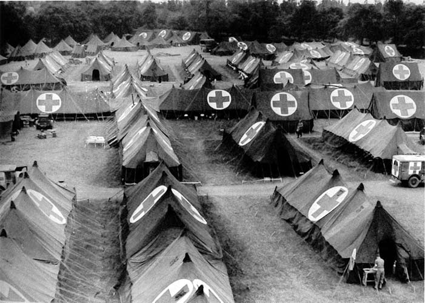
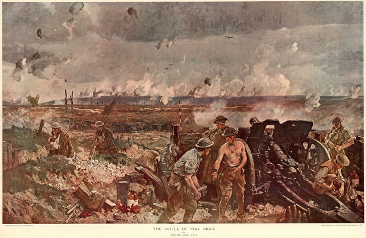

| JANVIER
Charles a quitté la région de la
Somme et est revenu avec son unité sur le Front ouest. Un long
hiver lugubre commence pour les Alliés.
ENFIN UNE PERMISSION POUR CHARLES
Après plus de deux ans, Charles a droit à
une permission du 12 au 23 janvier 1917. Les soldats ne
peuvent pas revenir au pays, mais ils sont heureux d'aller en
Angleterre ou dans une grande ville française, surtout
Paris. Nous ne connaissons pas la destination choisie par Charles, mais,
comme tous ces jeunes hommes, il veut sûrement profiter au maximum de
sa permission. La plupart font la fête,
recherchant des plaisirs simples comme l'alcool ou les rapports sexuels.
Ils jouent les touristes et achètent des cartes postales pour leurs proches.
 Malgré cette évasion temporaire, ces
jeunes gens savent qu'ils doivent retourner au Front. Charles
est de retour dans son unité le 23 janvier. Malgré cette évasion temporaire, ces
jeunes gens savent qu'ils doivent retourner au Front. Charles
est de retour dans son unité le 23 janvier.
Il fait
très froid et, les jours suivants, la routine reprend. On tire des salves
sur différentes cibles qui sont atteintes, selon les
observations faites par les avions après les tirs.
L'artillerie canadienne est maintenant de plus en plus aguerrie
et mieux équipée, le système de communications est plus
performant, et les résultats s'en ressentent.
FÉVRIER
Le général britannique Byng vient inspecter la batterie au
début du mois. Les tirs sont plus ou moins nourris, selon
les jours, plusieurs viennent en appui aux raids menés par la
4ème division canadienne.
DEUXIÈME
HOSPITALISATION POUR CHARLES
Le 21 février, Charles est hospitalisé.
Il souffre de "herpes praeputical, A265". C'est
le premier signe d'une maladie vénérienne qu'il a contactée durant sa
permission.
Ces maladies posent un grave problème de santé
dans les armées. À partir de 1940 on les soigne avec
de la pénicilline, mais, du temps de Charles, le seul remède
connu est le mercure. On l'administre sous plusieurs formes depuis des siècles, en fait, le mercure tue autant que
la maladie elle-même.
LE 28 FÉVRIER 1917, CHARLES A 24 ANS.
 Charles
est d'abord hospitalisé dans l'hôpital de campagne #1,
c'est-à-dire des tentes à Cité 9, près de Barlin. Puis il est
transféré, le 6 mars,
vers le 39e Hôpital Général Canadien au Havre, en
Normandie. Il y est soigné jusqu'au 13 mai
1917. À cette période de la guerre, le Commonwealth a ses hôpitaux généraux en Normandie,
il utilise des bâtiments réquisitionnés, ou des tentes
montées sur de grands terrains, comme le champ de
course de Rouen. Je n'ai pas trouvé le genre d'installation que
Charles a connu au Havre. Des cimetières sont attitrés pour
les morts de ces hôpitaux.
AVRIL Pendant
l'absence de Charles a lieu la Bataille de Vimy, du 9 au 12
avril. Les quatre divisions canadiennes sont réunies au combat
pour la première fois, et prennent la crête de Vimy. Le Canada s'affirme ainsi, de plus
en plus, comme une nation.

La bataille de Vimy, par Black.
MAI Le
13, Charles rejoint son unité qui est toujours basée dans la
région de Vimy. Chaque jour la batterie lance des salves sur
différentes cibles.
L'unité a reçu des canons plus performants. Des tirs de
calibration sont nécessaires pour s'habituer à ces nouvelles
armes. Les observations des tirs, et de leurs résultats, sont
plus précises. Notamment les observations faites en avions qui
permettent de corriger rapidement le tir pour mieux atteindre la
cible. Les communications et les repérages s'améliorent aussi,
permettant à l'artillerie de mieux répondre aux "SOS
Lines", soit les appels au secours venant des
tranchées et demandant des tirs d'artillerie pour les protéger
d'attaques ennemies.
JUIN L'unité
de Charles ne chôme pas. Chaque jour des centaines de salves
sont tirées. Exemple: le 8 juin, plus de mille salves, la
majorité étant des "gas
shell", sont tirées en appui au raid entrepris par la
4ème division canadienne. Le 15 juin, un officier de l'unité
est blessé, il meurt à la fin du jour.
|